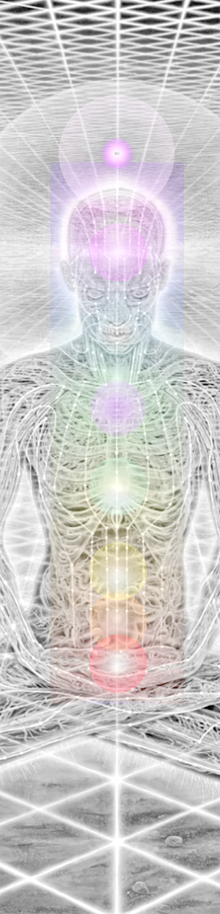
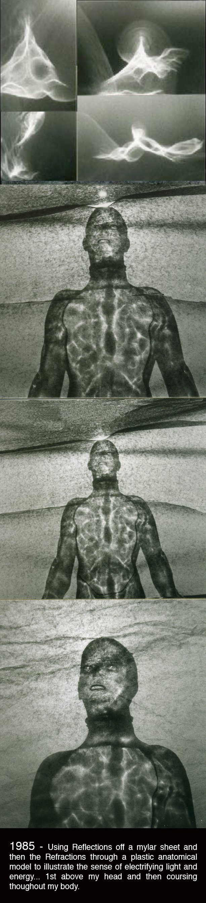

P1Spontaneous!!KundaliniEnergy
"A Kundalini Crisis"
Medical White Paper
In 1985...
A FULL-ON KUNDALINI AWAKENING!
After 14 Years of practicing Transcendental Meditation, during a period of more frequent and extended sessions, sometimes 2-3 hours a day, I unexpectedly experienced a sudden intensely powerful "inner flood" of energy that filled my body with the sensation and perception of light infusing every cell of my being! It was accompanied with a feeling of unimaginable bliss!!
I would never forget this experience. It's like it happened yesterday. Even now, 34 years later, I continue my meditation practice striving to repeat and sustain similar non-ordinary states of consciousness and expanded awareness. On that day I was forever changed as a human on this planet. I began to evolve immediately in ways I had never known were possible, experiencing many forms of PSI phenomenon which, over time, I began to understand was part of the destiny of all humans as we awaken to the greater mind of a universal consciousness.
In the weeks following, at a time prior to the internet, when the only source of information were libraries and bookstores, I was continually led by a sequence of synchronicities to discover what had happened to me, and what that energy was that I had experienced. In this way, the Universe "debriefed" me about the event and constantly provided me with answers to my many questions, offering more than I could grasp and understand at the time.
Through seemingly chance encounters and random events, information came to me daily. I had a new "Inner Guidance" that I communed with constantly, and that above all emphasized discipline, documentation and patience.
I quickly learned that the energetic event had been...
In the months prior to the experience there were hints that something unusual was starting to happen during my meditations. But I had no context or education to understand the life-changing event that was about to happen.
At this point in my life, I had just been through a series of personal challenges. My mother had died, my design and construction business was failing. I was in the process of filing for bankruptcy. and an attempting to re-build my life and who I was. As part of that plan I had decided to return to school to get my degree in architecture. The schools all required a substantial art portfolio demonstrating high levels of creative talent and artistic proficiency. This was beyond the scope of typical drawings I had been doing up to that time as an architectural designer. Most of my work had been simple floor plans and straight-on views of houses and buildings.
So I started working on producing an "Artistic Portfolio". I started drawing anything I saw or that came to mind. After a while, it occurred to me that in order to increase my creativity I should meditate more frequently and for longer periods of time. During the longer meditations, I began losing physical awareness and sensation of my body. I became more aware of a vast and spacious inner realm that was extremely peaceful and beautiful.
One day I became aware of the sensation & presence of light. Initially, it was just at the top of my head but then suddenly washed down throughout my body to my feet and fingertips. I felt "Electrified" and on FIRE! Yet, I was in a very sweet and blissful state. Then I felt a second flow of energy and light, this time starting at the base of my spine and rising up my back into my head. This whole event lasted only minutes. This occurred twice in one week.
In my subsequent meditations, I found it was very easy to get almost as deep, but the sensations of energy were not as intense and any attempt to consciously be aware of it would stop the feelings altogether. So I immediately made drawings of what I had experienced and created a 3D model that I photographed to document what I had experienced as the energy traveled through me.
After several days of being in this charged state, I was having difficulty sleeping, and then after almost 4 days of literally no sleep I admitted myself to the local hospital for sedation and rest. After leaving the hospital a series of uncanny synchronicities led me to a nearby Yoga-Studio that had just opened where I found someone to talk to and some answers! It was here that I first learned about Kundalini Energy and what had probably happened to me. It had been a major Kundalini Awakening but I had not been properly prepared. I also discovered that I was not the only one experiencing this and that it was being mis-identified often by western medical doctors, (see PDF-Spiritual Crisis), as various types of psychosis.
As a result of this personal experience, I have traveled an amazing and synchronicity filled spiritual path for 33 years. Recently, I have begun to experience more robust and recurring psychic & ESP abilities beyond just typical synchronicities...abilities similar to what the ancient texts referred to as the Siddhis. This includes Telepathy, Precognition, Bi-location, OOBE, and various forms of Remote Viewing/Perception. All of these extraordinary abilities starting occurring right after the awakening, but it is only in the last 8-10 years that they have become more frequent and sustained.
It is my belief that these are all aspects of awareness functioning at higher levels of consciousness possible for all humans on this planet. I believe these attainments are what will lead us collectively in restoring the planet to a more balanced, harmonious and magical world.

Documenting the Event...
In October 1985, using reflections of sunlight off a twisted mylar sheet, and light refracted through a clear plastic anatomical model, I attempted to illustrate & record the sense of electrifying energy that was coursing throughout my body starting with an "Orb" of energy over my head.

"Human Bio--Energy System"
by Alex Grey.
One of the pieces of information that "came to me" immediately after the awakening... was a white-paper by a young medical student whose wife owned a newly opened yoga studio in Woodbury, Ct. He had been researching the pathological effects of unexpected Kundalini awakenings in the United States. Individuals who had been committed practitioners of the Maharishi's transcendental meditation program, but who had not been fully or properly prepared for a Kundalini experience, as one might be if they were in India, were increasingly showing up in emergency rooms.
In Eastern spiritual practices it is understood that a student or adept must be prepared before the kundalini arousal. This usually includes months of physically de-toxifying the body and mind and studying sacred texts of the science of consciousness and the inherent wisdom of such ancient spiritual practices. Kundalini experiences were usually reserved for individuals whose bodies, minds, and energy systems had been propoerly made ready for the increased energy and frequencies. Mine was not nor were others finding themselves in similar distress.
Consequently many unwitting meditators had been showing up in Emergency Rooms across the US, mot unlike myself, after experiencing such powerful inner energetic events. Unfortunately, the typical response by health practitioners at the time was based on a medical model that was, like most of the scientific world, reductionistic, materialistic, and ignorant of the phenomenon and un-acknowledging of non-ordinary states of consciousness that were NOT pathological conditions, but spiritual states of awareness. It is only recently with the acceptance of alternative therapies and protocols for healing, that this has started to change, including a new psychological condition in the DSM-5 termed "Psychological Emergencies".
The attached PDF is a copy of that paper and explains the situation more fully. If I had not been led to discover this paper.... I might have never understood what exactly I had experienced.
The fact that I did this instinctively before having any knowledge of the chakras, meridians, or the effects of kundalini energy, only served to validate my experience as I learned much later in life about the human bio-energy field and the existence of ancient texts, such as the Yoga Sutras of Patanjali, that present a science and practice for balancing and developing it.